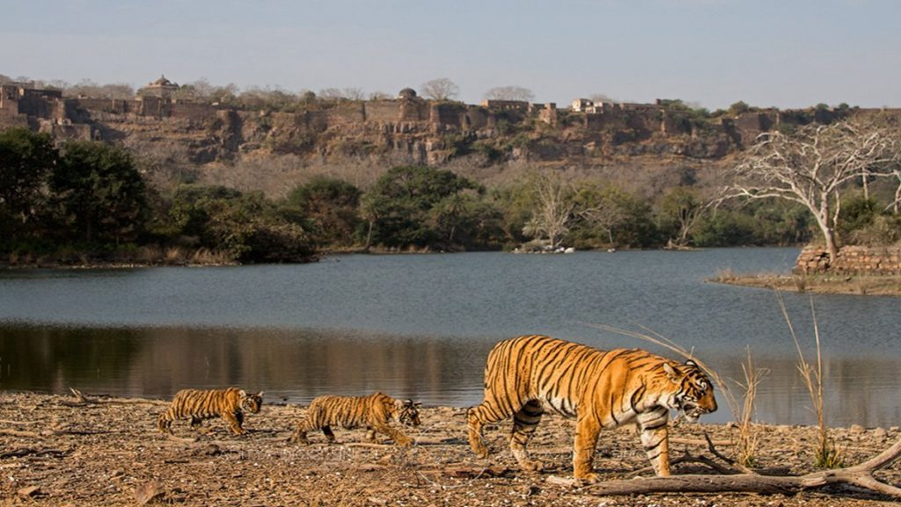
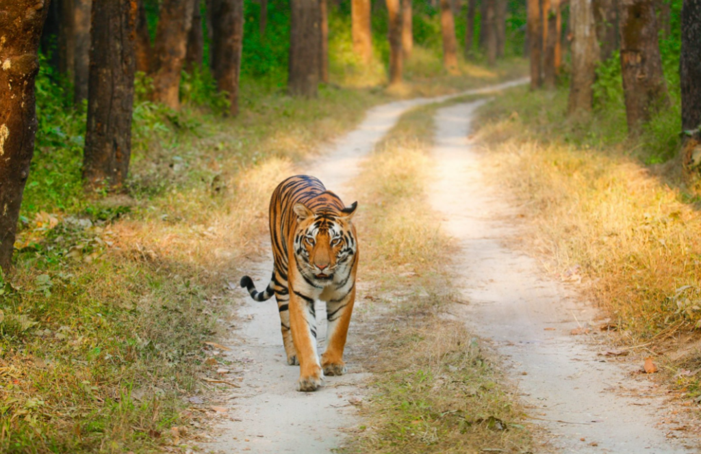

India is a land of varied flora and fauna. You can even find several hamlets in the country where spotting
animals like elephants, leopards, jackals, foxes is not a big deal. This is a perfect country for people who are
nature lovers. And if your kids want to witness Asiatic lions, Royal Bengal tigers, panthers, one-horned
rhinoceros at their natural habitat, you must take them to the wildlife sanctuaries here. You can plan a road
trip to these wildlife sanctuaries since you can also explore the nearby cities. So let us take a look at the
popular wildlife sanctuaries in India.
-
Kaziranga National Park

One World Wildlife Day 2022, you must plan a road trip to Kaziranga
National Park. Covering a vast area, dotted by tall elephant grass, this is one national park that you
must
not miss out on visiting. This is a World Heritage Site where you can witness the beautiful and unique
one-horned rhinoceros. On the swamps here, you can also find wild Asiatic water buffalo. The nearest
city to
this national park is Gauhati.
-
Distance from Gauhati: 193 km
- Best time to travel: November to February
- Nearby destinations to visit: Gauhati, Shillong
- Things to do: Elephant safari, jeep safari, bird watching, visit Kakochang waterfall, tea estate tour,
etc
2. Ranthambore National Park

Ranthambore National Park is also one of the popular wildlife destinations in India which is frequented by
many wildlife enthusiasts. This national park is surrounded by Chambal and Banas Rivers and has gained
popularity for housing majestic tigers. However, you will also be able to find several other animals here
such as wild boar, nilgai, leopard, hyena, and sambar.
-
Distance from Jaipur: 190.7 km
- Best time to travel: November to February
Nearby destinations to visit: Trinetra Ganesh Temple, Ranthambore Fort, Jogi Mahal, Hammir Palace,
- Things to do: Jungle safari
3. Kanha National Park

It is the grassy fields and bamboo forests of Kanha National Park that inspired Rudyard Kipling to write The
Jungle Book. The area is large here and is perfect for the animals to live. From giant antlers to
barasingha, you can find several types of animals here well protected. The other animals that you can spot
here are mongoose, hyenas, peacocks, tigers, jungle fowls, panthers, sloths, and langurs.
-
Distance from Jabalpur: 129 km
Best time to travel: December to February
Nearby destinations to visit: Kanha Museum, Kawardha Palace, Mandla, Amarkantak, Jabalpur, etc.
Things to do: Wild safari, Elephant safari, Night safari, Trekking, Nature walk, etc.
{kind=link}